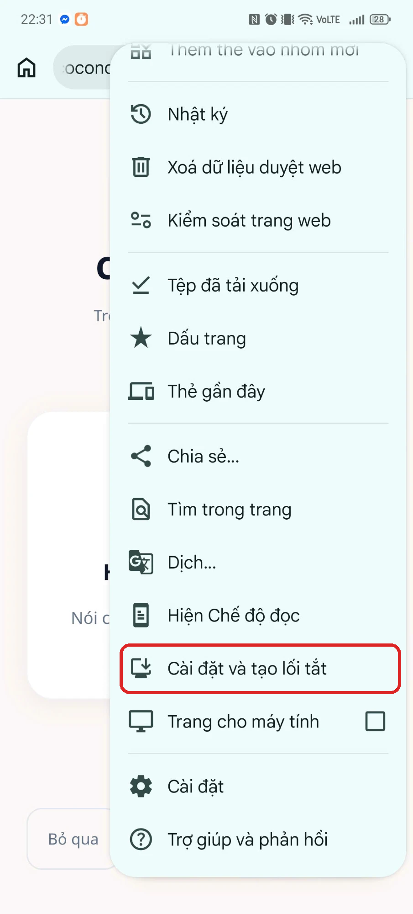
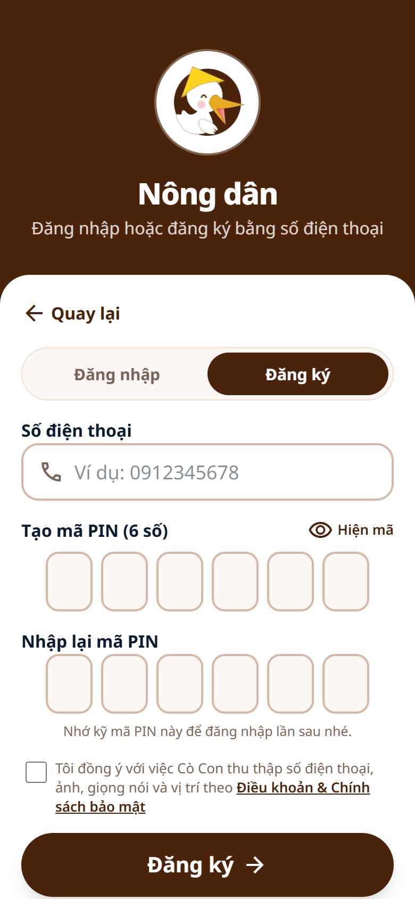
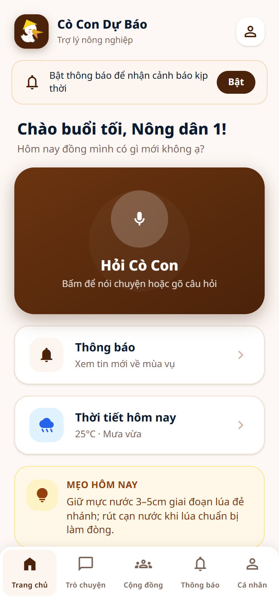
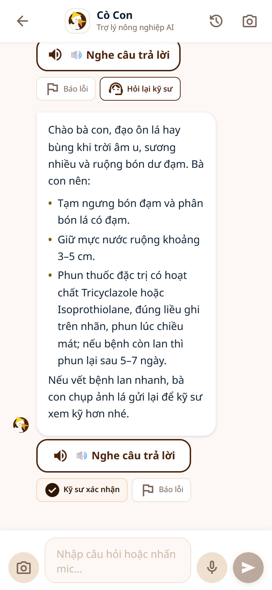

Hướng dẫn dùng app Cò Con — DÀNH CHO NÔNG DÂN
App giúp bà con hỏi về cây trồng và được trả lời ngay. Câu khó sẽ có kỹ sư trả lời giúp. Địa chỉ app: cocondubao.vercel.app (mở bằng trình duyệt điện thoại). Có thể cài app ra màn hình chính (xem mục 1) để dùng như một ứng dụng.
Mục lục
- Cài app vào điện thoại
- Đăng ký / Đăng nhập
- Khai báo hồ sơ lần đầu
- Màn hình chính
- 3 cách đặt câu hỏi
- Đọc / Nghe câu trả lời
- Khi AI chưa chắc — hỏi kỹ sư
- Báo câu trả lời sai
- Các tính năng khác
- Hỏi đáp nhanh (FAQ)
1. Cài app vào điện thoại
- Mở trình duyệt (Chrome / Safari) → gõ địa chỉ cocondubao.vercel.app.
- Bấm menu trình duyệt rồi chọn mục cài app:
- Chrome (Android): bấm dấu ⋮ góc trên bên phải → chọn "Cài đặt và tạo lối tắt" (máy để tiếng Anh: "Install and create shortcut"; Chrome đời cũ ghi "Thêm vào màn hình chính") → bấm Cài đặt để xác nhận.
- Safari (iPhone): bấm nút chia sẻ (ô vuông có mũi tên lên) → chọn "Thêm vào MH chính".
- Từ nay mở app bằng biểu tượng con cò ngoài màn hình, không cần gõ địa chỉ nữa.
- Khi dùng giọng nói, cho phép micro nếu trình duyệt yêu cầu. Để nhận thông báo trên thiết bị, vào Thông báo → Cài đặt thông báo → Bật và cho phép quyền thông báo.
Mẹo cho bà con lớn tuổi: vào Hồ sơ → Cỡ chữ hiển thị → Lớn / Rất lớn để chữ to, dễ đọc.

2. Đăng ký / Đăng nhập
Dùng số điện thoại + mã PIN 6 số.
- Mở app → màn hình chọn vai trò → bấm "Nông dân".
- Lần đầu — chọn tab Đăng ký:
- Nhập số điện thoại.
- Tạo mã PIN gồm 6 chữ số (ví dụ
482739). Nhớ kỹ mã PIN để đăng nhập lần sau. Tránh dãy liên tiếp, số lặp hoặc mẫu dễ đoán.
- Nhập lại PIN, đánh dấu đồng ý với Điều khoản & Chính sách bảo mật, rồi bấm Đăng ký → khai báo hồ sơ (mục 3).
- Lần sau — chọn tab Đăng nhập → nhập số điện thoại + mã PIN → bấm Đăng nhập.
- Quên PIN? → Nhờ admin ở xã đặt lại giúp (họ đọc cho bạn mã PIN mới).
Nếu tài khoản cũ không dùng được PIN, liên hệ admin để được hỗ trợ đặt lại PIN.
Các trường hợp app báo lỗi (và cách xử lý):
| App báo | Nghĩa là | Làm gì |
|---|
| "Vui lòng nhập số điện thoại." | Chưa nhập SĐT | Nhập số rồi bấm lại |
| "Mã PIN gồm 6 chữ số." | PIN chưa đủ 6 số | Nhập đủ 6 chữ số |
| Đăng nhập báo sai | Sai SĐT hoặc sai PIN | Kiểm tra lại; vẫn sai → nhờ đặt lại PIN |
| "Tài khoản đã bị khóa" | Admin đã khóa tài khoản | Liên hệ admin ở xã |
Lưu ý: PIN bị che (hiện dấu •) cho an toàn. Có thể dán (paste) PIN nếu lưu sẵn.

3. Khai báo hồ sơ lần đầu
Sau khi đăng ký, app hỏi vài thông tin để hỗ trợ tốt hơn:
- Tên của bạn (bắt buộc) — ví dụ "Chú Hai", "Anh Ba Lúa".
- Ấp / Xã — ví dụ "Ấp Trường Thọ, xã Trường Khánh".
- Cây trồng đang canh tác: Lúa / Rau màu / Cây ăn trái / Khác (chọn được nhiều loại).
- Bấm "Bắt đầu dùng Cò Con →".
4. Màn hình chính
- Nút lớn "Hỏi Cò Con" (hình micro) → vào để đặt câu hỏi.
- Thông báo → tin mới về mùa vụ, cảnh báo sâu bệnh (số đỏ = tin chưa đọc).
- Thời tiết hôm nay → xem nắng/mưa, nhiệt độ.
- Mẹo hôm nay → gợi ý canh tác theo cây trồng của bạn.

5. Ba cách đặt câu hỏi
Cách 1 — Gõ chữ: Gõ câu hỏi vào ô dưới cùng → bấm nút gửi (mũi tên).
Cách 2 — Nói bằng giọng nói: Bấm nút micro → nói câu hỏi → app tự chuyển thành chữ → bấm gửi.
- Lần đầu app xin quyền micro → bấm Cho phép.
- Nói ở nơi yên tĩnh, rõ ràng để app nghe đúng.
Cách 3 — Gửi ảnh sâu bệnh: Bấm nút máy ảnh → màn "Gửi ảnh sâu bệnh":
- Bấm "Nhấn để chụp ảnh" (mở camera) hoặc chọn từ thư viện ảnh.
- Chọn xong xem trước, có thể bấm "Chụp lại" hoặc xóa ảnh (nút ✕) để đổi.
- Mô tả thêm (không bắt buộc): gõ hoặc bấm "Nói" để mô tả bằng giọng nói. Bỏ trống thì app tự hiểu là "Cây bị bệnh gì?".
- Bấm "Gửi cho Cò Con". AI nhìn ảnh và tư vấn (có nhãn tím "Phân tích ảnh bằng AI Vision").
Lưu ý ảnh: chỉ nhận file ảnh, dung lượng tối đa 10MB. Chụp rõ vùng bị bệnh, đủ sáng. Nếu phân tích ảnh trục trặc, AI sẽ tự chuyển sang trả lời theo mô tả chữ.
Nếu hồ sơ có cây trồng, nút chọn cây hiện ở đầu màn hình chat — bấm để chọn cây liên quan đến câu hỏi.
Gửi quá nhanh/nhiều: hệ thống giới hạn ~15 câu hỏi/phút. Nếu hỏi dồn dập, app sẽ nhắc chờ chút rồi gửi lại.

6. Đọc / Nghe câu trả lời
- AI trả lời ngay trong khung chat.
- Bấm nút 🔊 Nghe câu trả lời để app đọc to (tiện cho bà con khó đọc chữ).
- Thấy nhãn "Kỹ sư xác nhận" → câu trả lời đã được kỹ sư kiểm chứng, rất đáng tin.
- Câu trả lời kỹ thuật luôn có dòng nhắc tham khảo thêm ý kiến kỹ sư — đây là điều bình thường, để bà con thận trọng.
7. Khi AI chưa chắc — hỏi kỹ sư
- Câu khó, app tự chuyển sang màn chờ kỹ sư → bạn chờ kỹ sư trả lời. App thông báo thời gian dự kiến là 24 giờ; thời gian thực tế tùy tình hình xử lý.
- Khi đã có câu trả lời AI, bạn vẫn có thể bấm "Hỏi lại kỹ sư" → app hỏi xác nhận "Gửi câu hỏi này cho kỹ sư nông nghiệp xem lại?" → đồng ý.
- Gửi xong nút đổi thành "Đã gửi kỹ sư" (mỗi câu chỉ gửi 1 lần).
- Câu đã có nhãn "Kỹ sư xác nhận" thì không cần hỏi lại — đó là câu kỹ sư đã duyệt.
- Khi kỹ sư trả lời, kiểm tra lại cuộc hội thoại; thông báo đẩy phụ thuộc vào việc thiết bị đã bật thông báo và kết nối mạng.
8. Báo câu trả lời sai
Thấy AI trả lời sai/khó hiểu → bấm "Báo lỗi" (cờ) dưới câu trả lời → chọn 1 trong 3 lý do:
- Thông tin sai
- Không liên quan đến câu hỏi
- Khó hiểu, cần giải thích thêm
(Bấm nhầm thì chọn "Bỏ qua".) Báo xong app cảm ơn; kỹ sư/admin sẽ xem để cải thiện. Cảm ơn bà con!
9. Các tính năng khác
9.1. Lịch sử chat
- Bấm nút đồng hồ để xem lại các câu đã hỏi.
- Có ô tìm trong lịch sử (vd gõ "lúa", "vàng lá") để tìm nhanh câu cũ.
- Trên màn hình kết quả có thể bấm Lưu để lưu câu trả lời, hoặc Hữu ích để đánh giá. Vào tab Đã lưu trong Lịch sử chat để xem lại hoặc bỏ lưu.
9.2. Cộng đồng nhà nông
Nơi bà con chia sẻ kinh nghiệm với nhau:
- Đăng bài mới: bấm "Đăng bài mới" → viết chia sẻ (có thể đính kèm ảnh hoặc dán link ảnh) → đăng.
- Chúc mừng (giống "thích"): bấm nút Chúc mừng dưới bài để động viên người đăng.
- Bình luận: bấm Bình luận để trao đổi thêm dưới bài.
- Xóa bài của mình: bài do bạn đăng có nút xóa.
- Báo cáo bài hoặc bình luận không phù hợp: bấm nút báo cáo → xác nhận. Admin sẽ xem xét; bạn cũng có thể xóa bình luận của mình.
9.3. Cài đặt thông báo
Trong mục Thông báo → Cài đặt thông báo:
- Bật/Tắt nhận thông báo.
- Chọn loại tin muốn nhận: Cảnh báo dịch bệnh / Khuyến mãi vật tư / Thời tiết.
- Khung giờ không làm phiền (mặc định 22:00–06:00): thông báo đẩy bị bỏ qua trong khoảng này; vẫn có thể xem tin trong danh sách. Bấm Lưu cài đặt sau khi thay đổi.
9.4. Hồ sơ
Nút người ở góc: sửa tên/cây trồng, đổi cỡ chữ (Vừa / Lớn / Rất lớn), đặt/đổi mật khẩu, đăng xuất.
10. Hỏi đáp nhanh (FAQ)
| Tình huống | Cách xử lý |
|---|
| Quên mã PIN | Nhờ admin Đặt lại PIN → nhận PIN mới → tự đổi lại trong Hồ sơ |
| Tài khoản bị khóa | Liên hệ admin ở xã để mở khóa |
| Không nhận được thông báo | Vào Cài đặt thông báo → bấm Bật; kiểm tra quyền thông báo của trình duyệt |
| Micro không hoạt động / "Đang nhận dạng" mãi | Cho phép quyền micro; nói nơi yên tĩnh, rõ ràng; mạng yếu thử lại |
| App báo "Cò Con xử lý hơi lâu..." | AI đang bận — chờ chút rồi gửi lại câu hỏi |
| App báo "Mạng đang yếu..." | Kiểm tra 4G/wifi rồi gửi lại |
| Gửi ảnh báo lỗi | Ảnh phải là file ảnh ≤ 10MB; kiểm tra mạng, thử Chụp lại |
| Hỏi dồn bị chặn | Giới hạn ~15 câu/phút — chờ một lát |
| Câu trả lời sai | Bấm Báo lỗi dưới câu trả lời, chọn lý do |
| Câu hỏi khó, AI không chắc | App tự chuyển kỹ sư, hoặc bấm Hỏi lại kỹ sư → theo dõi cuộc hội thoại; app dự kiến 24 giờ |
| Cập nhật mới không thấy | Đóng hẳn app và mở lại (tải bản mới) |
Tóm tắt: Mở app → Hỏi Cò Con (gõ / nói / chụp ảnh) → đọc hoặc nghe trả lời → câu khó thì Hỏi lại kỹ sư.